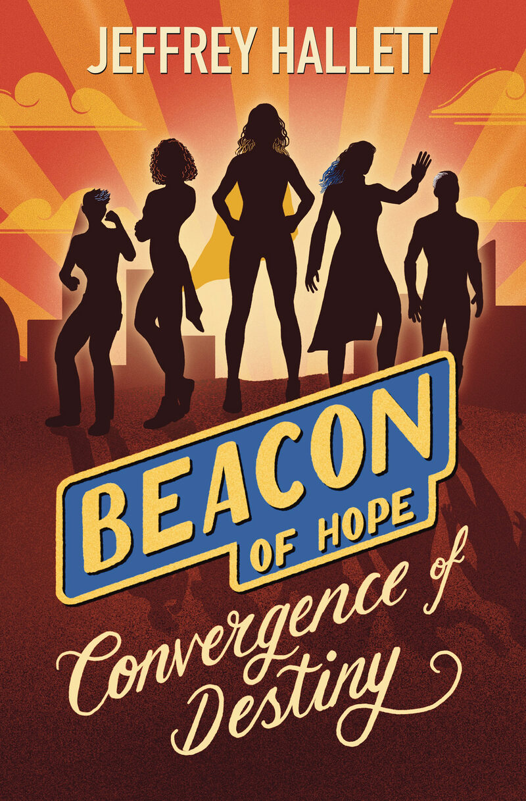

Work in Progress
Convergence of Destiny
Episode III · Authored by Jeffrey Hallett · Illustrated by Jessica Nagel
In the months since Sorensen's defeat, Tricia is haunted by her time at The Workshop, struggling with the ever-growing knowledge that she is not alone and questioning who she is in a changing world. However, even as she searches for answers, dark powers are once again at work.
To turn the tide, Tricia must finally come to terms with her destiny as Beacon once and for all and leverage her greatest strengths — her heart, her intellect, and her team — to save the ones she loves and prevent the world from plunging into darkness.